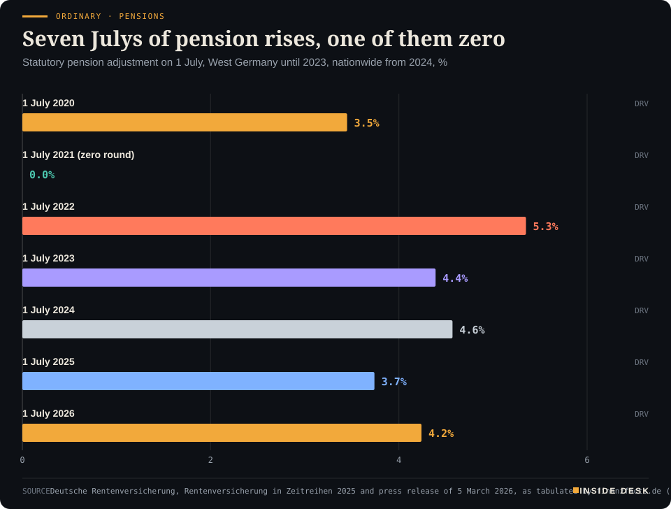
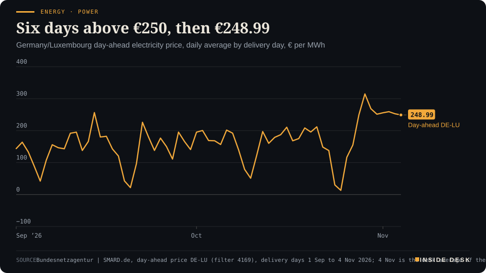
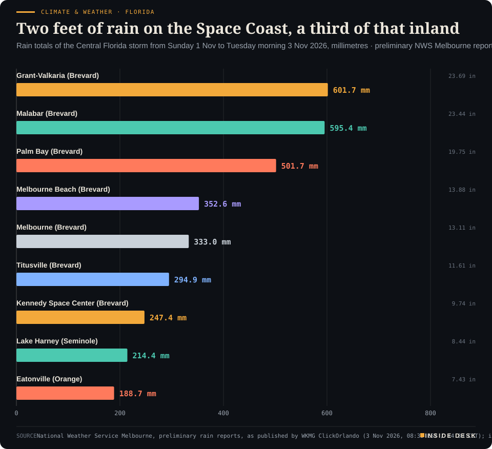

Inside Desk ePaper, Evening ePaper · Tue 3 Nov 2026
Tuesday, 3 November 2026Always free
Inside Desk
Evening ePaperPublished 17:30 CET · Berlin
Lead · Ordinary & Inherited Life
The government's first estimate for next July's pension rise arrived on Tuesday. It is a good number. It is also a forecast, and the one made a year ago was half a point too low.
The government pencilled in a 4.09% pension rise for next July, and the formula will check it against this year's pay in spring. Elsewhere: a president's claim about Hormuz against a ship count, Wednesday's power price slipping below €250, an early flu season, 23 inches of rain on Florida's polling day, and a likely Bank of England rise on Thursday.
Pensions could rise about 4% next July, but the real number will be worked out in spring from what people actually earned this year.
Geo-economics · p. 5
Markets & Macro · p. 6
Energy & Industry · p. 11
Climate & Weather · p. 17
The day in one sentencePensions could rise about 4% next July, but the real number will be worked out in spring from what people actually earned this year.
ContentsInside Desk · Evening ePaper3 November 2026
The government pencilled in a 4.09% pension rise for next July, and the formula will check it against this year's pay in spring. Elsewhere: a president's claim about Hormuz against a ship count, Wednesday's power price slipping below €250, an early flu season, 23 inches of rain on Florida's polling day, and a likely Bank of England rise on Thursday.
11 edition pieces · 11 desks · Published 17:30 CET, 3 November 2026
24 ePaper extras, added , 3 November. They appear only in the ePaper and carry their own time.
17:30 Evening ePaper, updated live until 22:30 with an “Updated” time and a Latest page
Sun 10:00 The Sunday Magazine
Berlin time. Every issue is free.
How to read it
Swipe, use the arrow keys or the page strip. Tap any headline for the reading view. Press / to search, t for contents, +/− to zoom. Download the PDF.
LatestInside Desk · Evening ePaper3 November 2026
Latest
Live: this page and the issue are updated until 22:30 Berlin time.
Markets: New York's close is in, Nasdaq up 0.84%, Dow down 0.46%, AMD up 3.65% before its results
Markets: Frankfurt's settled close is in, DAX down 0.31% and Bayer up 3.6%
LeadInside Desk · Evening ePaper3 November 2026
Ordinary & Inherited Life · Lead · 3 min
The government's first estimate for next July's pension rise arrived on Tuesday. It is a good number. It is also a forecast, and the one made a year ago was half a point too low.
On Tuesday afternoon the labour ministry sent its draft pension insurance report for 2026 to the other ministries for comment, and two newspapers had read it within the hour1,2. The headline is generous: Germany’s roughly 21 million statutory pensioners could get a rise of 4.09% on 1 July 20271,2.
In money, that means the value of one pension point would go from €42.52 to €44.26 a month1. For the textbook “standard pensioner” with 45 years of average contributions, the gross pension would rise from about €1,913 to €1,992, or €78.30 a month, Reuters reported1,2. The FAZ puts it more usefully for everybody else: about €41 more for every €1,000 of monthly pension2. The government expects prices to rise by 3% in 2027, so on these figures the rise would again run ahead of inflation1.
Now the part the headline leaves out. This is an estimate, not a decision. The actual figure is normally fixed in March, once the final wage statistics for 2026 are in, by a government ordinance that the Bundesrat must approve2,3. And estimates move. A year ago the government expected 3.73% for this July; pensions actually rose by 4.24%, half a point more1. The formula does not care what anyone says in November. It reads what employers paid in wages.
Ordinary · PensionsSeven Julys of pension rises, one of them zeroStatutory pension adjustment on 1 July, West Germany until 2023, nationwide from 2024, %

Bar chart of the German statutory pension adjustment on 1 July of each year from 2020 to 2026, for West Germany until 2023 and nationwide from 2024. 2020: 3.45%. 2021: zero, because wages had fallen in 2020. 2022: 5.35%. 2023: 4.39%. 2024: 4.57%. 2025: 3.74%. The latest value is 4.24% on 1 July 2026. The government's draft estimate of 4.09% for July 2027 is not shown, because it is not yet decided.
Source: Deutsche Rentenversicherung, Rentenversicherung in Zeitreihen 2025 and press release of 5 March 2026, as tabulated by finanzfacts.de (Stand 23 Oct 2026), retrieved 3 Nov 2026 · Official adjustment rates, freely usable · Actual adjustments only; the 4.09% estimate for 2027 is not drawn. · CSV
That is the dull machinery worth admiring. In 2026 the wage factor alone would have produced a rise of 4.25%; the sustainability factor, which weighs pensioners against contributors, would have pulled it down to 4.05%, and only the 48% “holding line” agreed in 2025 kept it at 4.24%3. Over 35 years, the pension point in the West rose by 100.7% while consumer prices rose by 101.9%3. That is not a windfall. It is a long, unglamorous promise to keep pace, mostly kept, with the bad year in plain view: in July 2021, after wages fell in 2020, the West got nothing3.
The other side of the payslip. The same draft says what it costs. The contribution rate stays at 18.6% of gross pay until the end of 2027, then rises to 19.7% in 2028 and 19.8% in 2029, slightly less than the pension insurer itself expected in spring2. The reserve does the waiting in between: €41.4 billion at the end of 2025, an expected €31.2 billion at the end of this year, which is just under one month’s spending, and about €12.1 billion at the end of 20271. Without the higher rate in 2028, Reuters reports, the reserve would then fall below its legal minimum1.
The holding line is not free either. The federal budget’s refunds for keeping the pension level at 48% are put at €1.7 billion in 2027 and €13.2 billion in 2031, after which the draft sees the level drifting down to 46.5% by 2040 under current law1. …
Geo-economicsInside Desk · Evening ePaper3 November 2026
Geo-economics · 2 min
The US-China tariff truce has a framework, a board and a list of toys. What it does not yet have is the dull notice that makes a customs officer charge less.
In late September, after their eighth round of talks, Washington and Beijing agreed a “30-for-30” framework: roughly $30 billion of each side’s imports would lose the extra tariffs, with more than 90% of the listed products going back to normal most-favoured-nation rates2. The US side covers things you can wrap: toys, home appliances, baby products, kitchenware, holiday gifts. China’s side covers American farm goods, personal-care products, medical devices and coal2.
The consultations on the lists ended on 31 October, East Asia Brief reported on Monday1. The US relief list runs to 77 tariff categories, almost all of them finished consumer goods. China’s runs to more than 1,600 tariff lines1. Both lists leave out the things factories actually buy from each other: intermediate electronics, lithium-ion battery cells, chemical precursors and chip-making tools1.
Now the dull part. Both governments must finish their domestic legal procedures before the cuts take effect, and the cuts are to start at the same time on both sides2. As of Monday, no Federal Register notice had been published and no start date set, so US importers keep paying the current duties1. Meanwhile a separate clock is running: temporary Section 301 exclusions for 178 categories of industrial equipment expire on 10 November unless USTR extends them1. The wider truce runs to 10 January 20271.
What this means for you: if you sell Christmas decorations or kettles from China, relief is coming, but not on any date you can put in a contract yet. If you buy packaging lines, power tools or factory automation, the date that matters is next Tuesday, and it could move your costs the other way. A framework is a promise. The customs schedule is the invoice. Nothing here is investment advice.
Geo-economics · Short item · ePaper extra, added
Washington has loosened its grip on Russian diesel. A sanctions lawyer's note explains why the cargo may still not move.
The US Treasury’s sanctions office has issued General License 135, and the president has used a waiver under this year’s Russia and Iran sanctions act1. Together they authorise some sale, delivery, offloading and import of Russian-origin diesel that the sanctions regulations would otherwise forbid1. With diesel dear, traders are asking whether the trade is open again.
A note from the law firm Seyfarth Shaw, published on Monday, is a useful corrective1. First, the licence “does not necessarily override” the Ending Importation of Russian Oil Act, a separate statute whose restrictions can only be lifted with notice to Congress and a chance for Congress to object1. Second, the EU, the UK and others keep their own restrictions, and a diesel cargo touches banks, insurers, shipowners and ports, each under its own regime. There is “little indication” that key allies plan to relax theirs1. …
Geo-economics · Brief · ePaper extra, added
China exported 6,165 tonnes of rare-earth permanent magnets in September, the most this year and 23% more than in August, according to Shanghai Metals Market’s reading of customs data1. The EU took 2,454 tonnes, up 20.5% and its most since February, after an October deal promising a licence “green channel” for European buyers1. Japan’s share fell 19.1% to 172 tonnes amid a diplomatic impasse1. US imports for January to September were about 15% below the same months of 2024, the Silverado Policy Accelerator found1. The magnets go into car motors, wind turbines and robots. October’s customs figures are due in the coming days, and they will show whether September was a backlog clearing or a new normal1. Nothing here is investment advice.
Markets & MacroInside Desk · Evening ePaper3 November 2026
Markets & Macro · 2 min
Europe drifted a fraction lower into its close, New York opened split down the middle, and the day's real verdicts came from the earnings tables rather than the polling stations.
Frankfurt did not wait for America. By about 16:08 CET the DAX stood at 25,913.40, down 0.27% on the day3, having touched 25,677.86 in the morning1; Monday’s close was 25,981.091. Xetra’s official close comes at 17:30, after this was written. The Stoxx Europe 600 was 0.4% lower at 647.13 by mid-morning, with technology the heaviest drag, down 1.6%, STMicro and ASML lower, as worries about AI valuations and fresh US strikes on Iran’s Qeshm Island kept buyers cautious2.
The exception was the dullest kind of good news. Bayer raised its full-year guidance for core profit (EBITDA before special items) to €9.8bn–€10.3bn, from €9.6bn–€10.1bn, on the back of an 8% rise in pharmaceutical sales, and the shares were up more than 6% in afternoon trading3. Two drugs, Nubeqa and Kerendia, grew 58.3% and 64.9% after adjustments3. A turnaround is not a speech. It is a column of prescriptions that keeps getting longer.
New York opened split in two. In the first hour the Dow was down 0.3%, the S&P 500 up 0.2% and the Nasdaq up 0.5%, as chip stocks recovered from a rough few days4. Apple fell more than 2% after its first report under its new chief executive, John Ternus: revenue beat estimates, but iPad sales missed and the margin forecast disappointed, with higher memory costs named as the main pressure5. Palantir fell even though revenue nearly doubled; the market looked past the quarter at the contracts behind it (see the ePaper)5.
Markets & Macro · Short item · ePaper extra, added
The quarter was a blowout; the forward order book was not, and the shares followed the order book.
Palantir’s revenue nearly doubled from a year ago and passed $2 billion in a quarter for the first time1. For the first time, its US commercial revenue also beat its government revenue1. The shares fell about 5% anyway1, and were still lower once New York opened2.
The reason sits in one dull line: total contract value, the deals signed for the future. In US commercial business Palantir closed $1.5 billion of it, up 11% on a year earlier. In the second quarter the same figure was a record $2.1 billion, up 153%1. Revenue tells you what was delivered. Contracts tell you what has been promised next.
Analysts were not alarmed. Goldman Sachs noted that the company put part of the slowdown down to shorter contract durations, and said the key will be turning those into longer commitments, “which Palantir has done successfully in the past”1. Piper Sandler said demand “still very much” outstrips supply1.
So both readings can be true. The business is growing fast, and the price had already assumed it would keep growing faster. When a share is priced for perfection, a good quarter is not enough; the next three have to be signed too. For you, the useful habit is to read the order book before the headline. Nothing here is investment advice.
Markets & MacroInside Desk · Evening ePaper3 November 2026
Markets & Macro · Short item · ePaper extra, added
This evening's Markets note was written before Frankfurt closed. The settled numbers are now in, and they are smaller than the afternoon's.
The evening’s Markets note left the DAX at 16:08, down 0.27%. Xetra has since closed it 0.31% lower at 25,900.91, after a day that ran from 25,677.86 to 26,037.281. It crossed 26,000 and could not stay there. The Stoxx Europe 600 closed 0.58% lower at 645.66, with miners leading the fall on weaker copper2.
Bayer kept most of its good day, not all of it. The shares had been up more than 6% in the afternoon; Reuters has them closing 3.6% higher after the raised profit forecast2. The rest of the board read like a ledger of separate invoices. Zalando fell 6.6%, the worst in the Stoxx 600, as a weaker gross margin and a net loss outweighed slightly better sales2. Lufthansa rose 3.9% on results analysts called broadly resilient, even with a trimmed profit forecast2. Philips gained 4.8% on a preliminary agreement with the US Justice Department to end investigations linked to its 2021 device recall2. Adidas lost 2.8% on a downgrade to “sell”2.
Brent was last down 1.2%, still above $100 a barrel2. So the close says what the afternoon said, only more quietly: Europe waited for America, and in the meantime marked each company on its own paperwork. Nothing here is investment advice.
Markets & Macro · Short item · ePaper extra, added
New York has closed. The Nasdaq rose, the Dow fell, and the chipmaker this evening's brief was waiting for ran into its results with the wind behind it.
New York closed at 22:00 Berlin time with the benchmarks pointing different ways. By Investing.com’s tally at the close, the S&P 500 rose 0.33% and the Nasdaq Composite 0.84%, while the Dow lost 0.46%1. Falling shares still outnumbered rising ones on the New York Stock Exchange, 1,616 to 1,1771. A handful of large names carried the index; most of the board did not follow.
Microsoft led the Dow, up 3.01%, with Amazon up 2.69% and Nvidia up 2.38%1. At the other end, Merck fell 3.22% and Home Depot 2.80%1. In the wider S&P 500, Gartner dropped 12.80% and Sysco 9.30% after their results1. Each move was a company’s own invoice, read on the day it arrived.
AMD, the report this evening’s Markets brief was waiting for, closed at $483.90, up 3.65%2. Its results were not yet out when this was written. So the shares went into the numbers higher, which raises the bar the brief described: the guidance for next quarter, not the result for the last one. Americans are still voting tonight, and prices will be marked again tomorrow. Nothing here is investment advice.
Markets & Macro · Brief · ePaper extra, added
AMD reports after New York closes tonight. Analysts expect earnings of $1.97 a share on revenue of $13 billion, against $1.20 and $9.2 billion a year ago, according to Bloomberg consensus1. Data centres should bring in $8.19 billion, up 88%; gaming is expected to fall 49% to $655 million as memory shortages push up prices1.
The shares rose more than 4% early on Tuesday1. Last week Intel beat on the quarter, gave a fourth-quarter range of $15–16 billion against $17 billion expected, and fell nearly 29%1. That is the bar: the forecast for the next quarter, not the result for the last one. Nothing here is investment advice.
Politics & InstitutionsInside Desk · Evening ePaper3 November 2026
Politics & Institutions · Podium vs Print · 2 min
On the eve of the midterms the president said the waterway was in hand. The ship counters and the shipping regulator kept a different ledger.
Podium
“We control the Strait of Hormuz. We control it, and strongly control it.”
Donald Trump, US president, in his closing pre-midterm remarks at the Lincoln Memorial, Monday 2 November 2026, the eve of election day
Print5 vs 84.8
AIS-visible commercial crossings so far on election day, against a pre-crisis average of 84.8 a day; the rolling seven-day average is 9.0.
hormuz.now AIS crossing count for Tuesday 3 November, against its pre-crisis baseline, Tuesday 3 November 2026, updated 16:24 CET
The podium. On Monday, standing in front of the newly reopened Reflecting Pool, the president gave his closing message before today’s midterms1,4. Among the reflecting-pool joints and the grass, he turned to the Gulf: “We control the Strait of Hormuz. We control it, and strongly control it.” He added that, as the Wall Street Journal had reported, the United States “took out last week more oil than at any time in the history of the Strait”1. We have not been able to check that report, so we leave it to the Journal.
The print. The dull count is easier to check. By 16:24 Berlin time today, the tracker hormuz.now had logged five AIS-visible commercial crossings since midnight UTC: two inbound, three outbound, two of them tankers2. Its rolling seven-day average is 9.0 crossings a day. Its pre-crisis baseline is 84.82. Desk arithmetic: the week’s traffic is running at about a tenth of normal. The counter warns that its day is still in progress, and ships with their transponders off are not in it. The official IMF PortWatch figure lags by days2.
The regulator. The shipping world’s own institution was blunter on Monday. Arsenio Dominguez, secretary-general of the International Maritime Organization, said there was “no confirmation that there are no mines in the region” and that the IMO was “not recommending anyone to go through the Strait of Hormuz”3. The designated lanes are not in operation. Ships that do cross use routes north through Iranian waters or south near Oman with US naval escorts, arrangements the IMO has not adopted3. He counted about 30 attacks on ships in and around the strait in October, and about 6,000 seafarers still aboard 350 to 400 ships in the Gulf3.
The gap. Both statements can be partly true. Escorts are a form of control, and the president’s own speech said a deal “could happen”1. But control that moves a tenth of the usual traffic is control of a corridor, not of a market. For you, the useful number is not the adjective. It is the crossing count, and the day the IMO changes its advice. Polls close from midnight Berlin time; this desk makes no forecast about them.
Politics & Institutions · Short item · ePaper extra, added
Zelenskyy came to Berlin unannounced, and the most useful thing he brought was a calendar.
Volodymyr Zelenskyy flew to Berlin today on a trip that had not been announced, and stood beside Friedrich Merz at the chancellery1. The words were familiar. Merz said Ukraine “can continue to rely on Germany”, with more help on air defence, energy and winter aid in the coming months1. Zelenskyy said that while many eyes are on America’s election, “the role of Europe – and specifically Germany – remains crucial”1.
The dates are what you can hold them to. On Wednesday the European Commission hosts a meeting with Ukraine, the United States, France, Germany, the UK, NATO and the World Bank, at national-security-adviser level, on post-war reconstruction and “prosperity”, spokesperson Paula Pinho said2. On 10–11 November, US envoy Steve Witkoff has announced talks in Abu Dhabi that the Kremlin has confirmed1,2. On 19 November the coalition of the willing meets in Berlin, and Merz said that meeting will decide further support for Ukraine in 20271.
Zelenskyy called a Russian suggestion of talks in Moscow “counterproductive”1. Merz said it was “crucial for Russia to finally engage in serious negotiations”1. Speeches are cheap; meetings with agendas, minutes and a World Bank seat at the table are not. Three of them are now in the diary.
Politics & InstitutionsInside Desk · Evening ePaper3 November 2026
Sweden’s parliament today rejected the Centre Party leader, Elisabeth Thand Ringqvist, as prime minister by 324 votes to 251. She had said herself that she had no chance. It is the second failed attempt to form a government in the 51 days since the election1. The rules are plain: after four failed votes, Sweden holds a snap election. The interim centre-right prime minister, Ulf Kristersson, is expected to lead the next attempt, though his outgoing coalition is also short of a majority1. That is not chaos. A constitution that counts the attempts and names what happens at four is doing exactly what it was written to do.
Psychology & BehaviourInside Desk · Evening ePaper3 November 2026
Psychology & Behaviour · 2 min
A study of the 2024 election night found that dreaming about the result went with sharper feelings the next day, not softer ones. Tonight is a good night to know it.
Polls in America start closing at midnight Berlin time, and many people will go to bed not knowing the result. A study reported on Monday asks what that night does to them1. William Livingston, Adam Putnam and Erin Wamsley surveyed 931 American adults twice: on the morning of election day, 5 November 2024, and again between 8:00 and 9:54 Eastern time the next morning, after the Associated Press had called the race1. The paper is published in PLOS One.
About 71% recalled a dream from election night, and 49% of those said it was about the election1. An AI classifier, checked against human raters, put the share at 44%, and nearly a quarter of all dreams referred directly to the candidates or campaign imagery1.
The researchers expected the old idea to hold: that dreaming softens emotional reactions overnight. It did not. Among people who recalled a dream, those who dreamed about the election showed a larger negative shift in how they felt about it1. The effect came from Democrats and, less strongly, Independents; Republicans felt the same whether or not they dreamed of it1. Democrats who dreamed of the election also woke up gloomier about their own future and the country’s1. Simply recalling some dream, about anything, made no difference1.
Read it with the caveats the authors give. It is correlational: people more invested in the result, or watching coverage until late, may be both likelier to dream of it and likelier to feel strongly1. Everything was self-reported, sleep was not measured, and it covers a single night1. The links were small across the whole sample, moderate within the two groups1.
What you can take from it is modest and practical. Your mood at breakfast tomorrow is not a verdict on the country. Feelings run hot the morning after; the counting, by law, runs for weeks. If you can, switch off before the last result, sleep, and judge the news on the second day rather than the first.
Psychology & Behaviour · Short item · ePaper extra, added
Four studies in Portugal and Sweden found people badly underestimate how willing the other side is to listen. Showing them the real answers helped.
A team led by André Mata at the University of Lisbon, with colleagues at Linköping University, asked a plain question: do we avoid political conversations because we assume the other side won’t listen?1 The work is in the Journal of Experimental Social Psychology.
In surveys of 198 people in Portugal and 402 in Sweden, participants rated their own willingness to hear contrary views, then guessed how supporters of their least liked party would answer1. They rated themselves as more receptive than average and consistently underestimated their opponents, when set against those opponents’ actual self-reports1. The lower the guess, the more frustrating and stressful a conversation was expected to be, and the less willing people were to have one1.
Monash University researchers followed 7,434 Australians aged 55 to 75 for nearly two decades in the HILDA household survey1. Loneliness did not change in the three years before retirement or the three years after, said the lead author, Johannes Kunz1. That held across income, wealth and job type, with or without grandchildren, volunteering or clubs1. About one in six (17.5%) reported often feeling very lonely1. Loneliness rises steadily from the late 60s, Kunz said, and losing a spouse matters more than leaving a job, so support should follow later life, not the retirement date1. The paper is in Scientific Reports. For pension-age debates, one worry can be crossed off the list.
Energy & IndustryInside Desk · Evening ePaper3 November 2026
Energy & Industry · 2 min
Six delivery days above €250 end by €1.01, and Tuesday's turbines made as much power by mid-afternoon as Monday's did all day.
The streak is over, though only just. Today’s day-ahead auction set an average of €248.99 per megawatt hour for Germany and Luxembourg for delivery on Wednesday 4 November, the desk’s average of the 24 hourly results that SMARD published this afternoon1. That is €3.86 below Tuesday’s €252.85 and the first delivery day under €250 since 28 October1. The six days in between all cleared above it, peaking at €314.85 on Thursday 29 October1.
Energy · PowerSix days above €250, then €248.99Germany/Luxembourg day-ahead electricity price, daily average by delivery day, € per MWh

Line chart of the daily average German-Luxembourg day-ahead electricity price from 1 September to 4 November 2026, in euros per megawatt hour. It falls to €30.12 on Saturday 24 October and €13.12 on Sunday 25 October during the storm, climbs to €314.85 on Thursday 29 October, the highest daily average of 2026 so far, and stays above €250 for six delivery days: €268.62, €251.42, €255.91, €259.31 and €252.85 on Tuesday 3 November. The latest value is €248.99 for delivery on Wednesday 4 November, the first day below €250 since 28 October.
Source: Bundesnetzagentur | SMARD.de, day-ahead price DE-LU (filter 4169), delivery days 1 Sep to 4 Nov 2026; 4 Nov is the desk average of the 24 hourly results of the 3 Nov auction, retrieved 3 Nov 2026, 16:25 CET · CC BY 4.0 · CSV
Don’t mistake a dip for a turn. Wednesday’s hourly prices still run from €209.12 for the 03:00 hour to €310.92 for 17:001. Desk arithmetic: the average is still about 61% above the €155.11 of Tuesday 27 October, the last day before the calm set in1. You are not looking at cheap power. You are looking at slightly less dear power.
Energy & Industry · Short item · ePaper extra, added
The first auction for standby power came in well under its price cap, and you will pay for it through a levy from 2031.
The grid regulator has put a price on Germany’s insurance against windless winter nights. The Bundesnetzagentur awarded 11 contracts for about 5,160 megawatts of new plants in its first auction for backup capacity, tagesschau reported on Tuesday1. All of it went to gas-fired projects, most of them to RWE and LEAG2.
The useful numbers are the dull ones. The average award was €155,296 per megawatt of creditable capacity per year, well below the cap of €244,0001. …
Energy & Industry · Brief · ePaper extra, added
The rule decided the result before the bids did. Plants in Germany’s first backup auction had to deliver 80% of their capacity for at least ten hours in a row, which made gas far more competitive than battery storage, Clean Energy Wire reported1. Battery projects bid; the economy ministry said none “prevailed in the price competition”1.
Some winners are not new plants at all: LEAG will convert lignite units at Jänschwalde and Boxberg to gas1. Converted coal units run at 40 to 45% efficiency against about 60% for modern gas plants, the Frankfurter Allgemeine reported, as cited by Clean Energy Wire1.
The design changes next spring. A 2,000-megawatt round in May 2027 drops the ten-hour rule2. You will be able to see then what batteries bid when the rules let them.
Money, FX & CommitteesInside Desk · Evening ePaper3 November 2026
Money, FX & Committees · 2 min
The Bank of England is expected to make its first hike since 2023; the argument is about the three or four that markets have already pencilled in.
On Thursday the Bank of England is expected to raise Bank Rate to 4.0% from 3.75%. Economists polled by Reuters expect it, and it would be the first increase since August 20231. The reason is energy. Consumer prices rose 3.5% in the year to September, against the Bank’s July forecast of 3.0%, and in September it warned that inflation would rise above 4% early next year1.
The Committee is not of one mind. It voted 6–3 to hold in September, and the Reuters poll points to 7–2 for a hike this time, with the external members Alan Taylor and Swati Dhingra seen as the likeliest to vote for no change1. “Their hands are increasingly being forced, whether they like it or not,” said Stefan Koopman of Rabobank1.
The interesting part is what comes next. Markets price three to four more quarter-point hikes in 2027, which would take Bank Rate to between 4.75% and 5.0%1. Even the hawks may not want to sign up to that. Oxford Economics thinks the minutes, or the Governor, Andrew Bailey, may signal that the rate is unlikely to reach the level priced in1. Catherine Mann has argued that part of that pricing is a risk premium the Bank created itself by waiting and seeing1.
There is a quieter test as well: the Bank’s first assessment of the budget John Healey presented last week, whose help for households and drivers economists expect to shave only a little off inflation1. Forecasts, votes and a budget check all arrive at 13:00 CET on Thursday. If you have a tracker mortgage or a savings account in sterling, that is your appointment. Nothing here is investment advice.
Money, FX & Committees · Short item · ePaper extra, added
German yields rose with crude in the morning; the bond desks were already thinking past the count to the next funding deadline.
German government bonds fell on Tuesday morning, which means yields rose. The Bund future slipped 0.13% to 122.5 and the 10-year yield climbed to 3.31%1, then to about 3.33% by early afternoon, up from 3.29% at Monday’s close2. The trigger was oil: reports of US strikes on Iran’s Qeshm Island in the Strait of Hormuz pushed crude up again, and with it inflation expectations and the odds of another ECB hike1.
Bond desks were also looking across the Atlantic, though not at the winner. Commerzbank analysts wrote that “Democratic control of Congress should be Treasury-positive on balance”, because control of the budget in the House would narrow the room for extra spending1. In the same breath they flagged the cost: a higher risk of another government shutdown on 11 December1.
That is the useful habit for tonight. …
Money, FX & Committees · Brief · ePaper extra, added
The euro traded at about $1.1178 in early afternoon, slightly lower, as the dollar firmed ahead of the US count2. ING’s strategists expect any move from the midterms to be short-lived; the dollar, they write, still answers mainly to the Fed1.
The more durable story is at home. French spreads did not benefit from Monday’s lower oil price, which ING reads as a sign that levels above 150 basis points “are the new normal now”, leaving the euro with a lingering risk premium1. ECB speakers since last week’s meeting have sounded hawkish, ING adds1. Nothing here is investment advice.
Ordinary & Inherited LifeInside Desk · Evening ePaper3 November 2026
Ordinary & Inherited Life · Short item · ePaper extra, added
Heating oil edged down a cent on Tuesday. The useful comparison is not yesterday but last November.
If your house runs on an oil tank, Tuesday brought a small mercy: a litre of heating oil cost between €1.70 (esyoil) and €1.76 (Tecson), about a cent less than on Monday1. Brent stood at $106.80 a barrel and gasoil at $1,433.25 a tonne that morning, according to HeizOel241.
The comparison that matters is the calendar. At the end of October 2025, the Morgenpost notes, a litre cost roughly 80 cents less than today1. On esyoil’s mid-month averages, the price was €0.92 in mid-February 2026, jumped to €1.34 by mid-March, and has sat at €1.69 to €1.73 since mid-September1.
esyoil’s market commentary does not promise relief. “An end to the high price level is not in sight,” it says, and it suggests that anyone who must buy orders only part of a tankful, hoping to top up more cheaply next year1. That is a dealer’s view, not a forecast to bank on.
Desk arithmetic: 1,000 litres at €1.70 is €1,700; at last November’s mid-month €0.95 it would have been €950. The tank is the same size. Only the invoice grew. Nothing here is advice.
Ordinary & Inherited Life · Brief · ePaper extra, added
On Tuesday the cheapest electricity tariff for a new customer cost 32.02 cents per kWh on the national average, StromAuskunft reports, up 7.20 cents, or 29%, on a year ago and the highest since May 20231. Basic supply (Grundversorgung) moved the other way: 40.39 cents, down from 45.47 a year ago1.
So the gap between the two has shrunk from 20.65 cents to 8.37 cents per kWh1. For a household using 3,500 kWh a year, switching from basic supply to the cheapest tariff would still save about €293 a year on the site’s figures, with Thuringia the outlier at €7111.
The slow tariff absorbed the shock; the fast one passed it on. Neither is a scandal. It is how a price guarantee and a monthly reprice behave in the same storm. Nothing here is advice.
Tech & ComputeInside Desk · Evening ePaper3 November 2026
Tech & Compute · 2 min
The chipmaker has reportedly told data-centre partners worldwide to sell most of their new capacity outside China, and the rule exists nowhere on paper.
Nvidia has told its cloud and data-centre partners that at least 51% of the services they sell on new contracts must go to companies that are not Chinese, the Financial Times reported on Tuesday, citing five people familiar with the matter1. Existing agreements are untouched1. The rule applies to partners worldwide, not only in Asia2, and Nvidia had not imposed anything like it before1.
The detail worth noticing is the form. The requirement was passed on verbally, by the sales force and regional teams, not in written documentation2. Nvidia neither confirmed nor denied it when AFP asked1. In a statement it said that “American chips are the foundation” that American model makers need to compete worldwide, and that US policy encourages cloud providers to build on American infrastructure2.
The aim is plain enough. Many Chinese AI developers rent computing power from cloud providers outside China, and Washington has tried for years to close that route1. Smuggling is the other route; earlier this year senior employees at the server maker Super Micro were charged over about $2.5bn of Nvidia servers sent to China1.
The cost is plain too. A Singapore-based operator told the FT it is hard to find enough non-Chinese clients outside the US, and that strict enforcement could put its business at risk3. A share rule also needs someone to count: what is a “Chinese” customer, who checks, and what happens at 52%?
That is why you should want this written down. Export control works when it is boring: lists, licences, audits, a regulator who can be asked a question. A verbal quota from a supplier may be effective, but it can’t be checked, appealed or amended.
Tech & Compute · Short item · ePaper extra, added
A bill heard in Taipei on Monday would make shipping controlled AI chips to China a crime in its own right, with up to ten years in prison.
In August, prosecutors in Keelung indicted nine people, including staff at the local units of Nvidia and Super Micro, over 74 Nvidia B300 servers allegedly diverted to Chinese buyers for a profit of more than NT$600 million (US$18.5 million)1. None of them faces an export charge. The case rests on breach of trust and forged documents, because Taiwanese law had no offence that fitted1.
That is the gap a bill from the ruling Democratic Progressive Party wants to close. Its amendment to the Foreign Trade Act, heard by parliament’s economics committee on Monday, would ban exports of specified chips, key wafer materials, components and chipmaking equipment to mainland China without government approval1. Violators would face up to ten years in prison and fines of NT$5–10 million, and the same would apply to shipments routed through a third country1.
The bill’s fate is uncertain. …
Tech & Compute · Brief · ePaper extra, added
On a day when European tech shares fell 1.6% on AI worries, the AI winner in London was a power company. Drax jumped 9% after partnering with Brookfield and the AI infrastructure platform Radiant to develop a data centre in a project that could attract more than £20 billion ($26.8 billion) of investment1.
Note the verb: “could”. The scarce input in compute is increasingly not chips but a site with a grid connection and steady power, which a power station already has. “All the investments are fuelled by the need for more compute,” said Gilles Guibout of BNP Paribas Asset Management, while allowing that some projects could be delayed1.
Health & CareInside Desk · Evening ePaper3 November 2026
Health & Care · 2 min
Flu cases are climbing weeks ahead of the calendar on both sides of the Atlantic, and the first lab check says this year's vaccine matches what is circulating.
Three weeks of numbers from Ontario tell the story in a row: 225 positive flu tests, then 305, then 360 in the week from 18 to 24 October, according to Public Health Ontario figures reported on Tuesday1. The province’s season began in early September, which is weeks before anyone’s planning calendar expects it.
The useful part is the second number. Canada’s National Microbiology Laboratory has tested 116 circulating samples against this year’s vaccine, and the infectious-diseases specialist Isaac Bogoch called the result “a really good match”1. A good match does not mean nobody catches flu. It means the jab you get this week is aimed at the virus actually going round, which is not a given every year.
The United States is seeing the same early start. The CDC estimates flu cases are likely rising in 44 states, and New York’s health department reported a 19% weekly rise in mid-October, with flu hospitalisations up from 199 to 2332. Experts are watching a G155E mutation in an H1N1 strain as one possible reason for the early start, though it is too soon to say for sure2. New York’s health commissioner also said fewer residents had been vaccinated than a year earlier, and said people “just need to be reminded”2.
So the problem is not the science. It is getting people to the clinic. Ontario opened free shots to everyone on 26 October, Toronto is running a combined flu, Covid and RSV clinic on Thursday, and Illinois health officials have tried horror-film memes to get people booked1,2. None of that makes headlines. All of it counts.
If your doctor or national guidance says you should have the jab, book it now. Protection takes a little while to build, and in an early season that wait matters more than usual.
Health & Care · Short item · ePaper extra, added
A global survey finds the young doing worst on energy and resilience, while people of every age rate their relationships and sense of meaning highly.
Researchers at Columbia University asked 50,000 people in 92 countries ten questions about how they are doing: competence, optimism, self-esteem, engagement, vitality and more. The results, published in Social Indicators Research, point to young people as the group dragging global scores down, mainly through lower vitality, emotional stability and resilience1.
There is a quieter finding that gets less attention. Relationships, meaning, competence, engagement and self-esteem were the highest-scoring dimensions1. People tend to rate their own lives better than the world around them, which the authors link to the familiar “optimism gap”1.
The everyday factors behave as you would expect. Being in work, earning more and living with other people all went with better scores, and there was no point at which more resources stopped helping. Each extra level of education was linked to higher well-being, and hybrid workers scored better than fully remote ones1.
Health & Care · Brief · ePaper extra, added
A survey of 1,000 US adults by the Sylvia Brafman Mental Health Center found that 49% said worries about AI had harmed their mental health or well-being. Among Gen Z respondents the figure was 71%, against 28% of baby boomers1.
The detail worth noticing is about behaviour. 64% said they had done something in the past year to prove their value, such as working extra hours, taking on unpaid duties or answering messages after hours. 42% said AI made them faster, while 33% said they were then expected to produce more1.
These are self-reported answers, as the researchers point out, not measured working conditions1. Still, a clear job description and a manager who explains the plan cost little to provide.
Security & OrderInside Desk · Evening ePaper3 November 2026
Security & Order · 2 min
Monday's attacks on supermarket refrigeration across Europe were not clever, which is exactly why the boring fix matters.
On Monday, supermarkets in at least ten European countries found their freezers warming up. Belgium, Estonia, Finland, Ireland, Italy, Luxembourg, the Netherlands, Portugal, Germany and Sweden all reported problems, temperatures reportedly reached 50°C, and stock had to be thrown away1. This came three weeks after an attack hit as many as 700 French grocery stores1. Nobody has claimed responsibility1.
The numbers are concrete. Delhaize had dozens of stores affected in Belgium and Luxembourg, Carrefour 15 Belgian stores, and Intermarché 15 of its 153 in Belgium. Thirteen SuperValu stores were hit in Ireland and seven Intermarché stores in Portugal1,2. Belgium’s federal prosecutors have opened an investigation, and the European Commission convened its interinstitutional task force with ENISA and Europol on Tuesday morning1,2.
This is not a story about sophisticated attackers. Italy’s government said the affected businesses mostly had “obsolete” systems with interfaces exposed to the internet and weak authentication1. The Swedish adviser Fredrik Blix said the control units “sit directly on the public internet”. In his account, the vendor patched the flaw in August, but thousands of units never got the update and the oldest cannot be updated at all2. Some retailers traced the problem to outside companies that manage their refrigeration. In western Germany, a Rewe store’s outage was linked to an attack on the system provider Danfoss1.
Who is behind it remains unknown, and the Commission’s spokesman declined to attribute blame1. Guessing does not protect a single freezer. What does is an inventory of which devices are online, who holds the passwords and when the last update was installed. Britain’s NCSC has already told retailers to update their fridge temperature controls1.
If you run a shop, a kitchen or a care home with remotely monitored equipment, ask your service company one question this week: is our controller reachable from the internet, and is it patched?
Security & Order · Short item · ePaper extra, added
The Bundestag budget committee takes Bundeswehr proposals 63 to 69 on 4 November, from Eurofighter contract changes to training rounds for the Puma.
Defence spending gets debated in speeches but approved in files. On Wednesday, 4 November, the Bundestag budget committee has seven so-called €25-million proposals before it, all funded from the defence budget, Einzelplan 141.
The list is practical. It includes another change to the Eurofighter production contract, which currently covers 38 Tranche 4 and 20 Tranche 5 aircraft. There are further night-vision attachments for rifles from an existing framework deal, and troposcatter radios that link network nodes without line of sight1. …
Security & Order · Brief · ePaper extra, added
Drone activity near Jersey Airport on Friday evening kept four planes from landing. One flight was cancelled and three were diverted back to the mainland. On Saturday evening, despite a police appeal that morning, five more flights were disrupted, including one from Funchal that ended up in Paris1.
Jersey says “additional measures” are now in place, without giving details for operational reasons. Police are trying to identify those responsible, and under Jersey’s aviation law, recklessly or negligently endangering an aircraft can bring up to five years in prison1.
The sensible response came from next door. Guernsey Airport says it is reviewing its response planning and risk management with the relevant authorities1. It is a modest step, but it is how airports are meant to learn from each other.
Climate & WeatherInside Desk · Evening ePaper3 November 2026
Climate & Weather · 2 min
Florida's Brevard County took two feet of rain from a storm that outran its forecast, and the polling stations moved before the water did.
The numbers from Florida’s Atlantic coast read like a typo. Grant-Valkaria in Brevard County recorded 23.69 inches of rain, Malabar 23.44 and Palm Bay 19.75, according to preliminary National Weather Service reports compiled by WKMG in Orlando1. Desk conversion: 23.69 inches is about 602 millimetres. Some parts of the county saw a 1-in-100-year flood, the station’s chief meteorologist wrote1.
Climate & Weather · FloridaTwo feet of rain on the Space Coast, a third of that inlandRain totals of the Central Florida storm from Sunday 1 Nov to Tuesday morning 3 Nov 2026, millimetres · preliminary NWS Melbourne reports

Bar chart of preliminary rain totals from the Central Florida storm of 1 to 3 November 2026, in millimetres. Grant-Valkaria in Brevard County had 601.7 mm (23.69 inches), Malabar 595.4 mm, Palm Bay 501.7 mm, Melbourne Beach 352.6 mm, Melbourne 333.0 mm, Titusville 294.9 mm and Kennedy Space Center 247.4 mm. Inland, Lake Harney in Seminole County had 214.4 mm and Eatonville in Orange County 188.7 mm, the last figure shown.
Source: National Weather Service Melbourne, preliminary rain reports, as published by WKMG ClickOrlando (3 Nov 2026, 08:33 EST / 14:33 CET); inches converted to millimetres by the desk (1 in = 25.4 mm); retrieved 3 Nov 2026 · Preliminary, subject to revision. · CSV
It was a local storm, and that is the point. The heaviest totals sit in a strip of southern Brevard. Melbourne had 13.11 inches and Kennedy Space Center 9.74; inland, Lake Harney in Seminole County had 8.44 and Eatonville in Orange County 7.431. The cause was unglamorous: an upper-level disturbance and persistent easterly winds feeding rounds of rain from Sunday1. One forecaster said the storm “exceeded everyone’s expectations”2.
Climate & Weather · Short item · ePaper extra, added
Record rain in normally dry Arizona sent Beaver Creek over its banks, and the bill falls on households that never thought to insure against water.
Arizona is not where you expect a flood. On Sunday night, Beaver Creek broke its banks in Camp Verde and more than 100 homes were under water; as it receded on Monday, most were destroyed, AZFamily reported1. …
Climate & Weather · Brief · ePaper extra, added
Winter knocked early on Tuesday. The Deutscher Wetterdienst issued level-one frost warnings for several Bavarian districts from midnight, in places until 06:00, with temperatures around −1°C, the Augsburger Allgemeine reported1. Baden-Württemberg, Thuringia and Saxony were also covered by the frost warning1.
Daytime brought little relief: dense, high-fog-like cloud over Swabia, Upper Bavaria and the Danube, with highs of only 3°C in the Allgäu to 8°C on the lower Danube1. Where skies clear, light frost is possible locally, and freezing wet roads can turn slippery in higher Alpine valleys1.
The useful advice is the dull one: leave a few minutes early to scrape the windscreen, and drive gently on damp, cold roads1.
Charts and dataInside Desk · Evening ePaper3 November 2026
Charts and data
Energy · PowerSix days above €250, then €248.99Germany/Luxembourg day-ahead electricity price, daily average by delivery day, € per MWh
Line chart of the daily average German-Luxembourg day-ahead electricity price from 1 September to 4 November 2026, in euros per megawatt hour. It falls to €30.12 on Saturday 24 October and €13.12 on Sunday 25 October during the storm, climbs to €314.85 on Thursday 29 October, the highest daily average of 2026 so far, and stays above €250 for six delivery days: €268.62, €251.42, €255.91, €259.31 and €252.85 on Tuesday 3 November. The latest value is €248.99 for delivery on Wednesday 4 November, the first day below €250 since 28 October.
Source: Bundesnetzagentur | SMARD.de, day-ahead price DE-LU (filter 4169), delivery days 1 Sep to 4 Nov 2026; 4 Nov is the desk average of the 24 hourly results of the 3 Nov auction, retrieved 3 Nov 2026, 16:25 CET · CC BY 4.0 · CSV
Latest values
Series
Value
Date
Chart
Day-ahead DE-LU
248.99
4 Nov 2026
Six days above €250, then €248.99
Last data point of each series in the charts above, from the Inside Desk data archive. Sources under each chart.
Back pageInside Desk · Evening ePaper3 November 2026
Before you close the tab
The day in one sentence
Pensions could rise about 4% next July, but the real number will be worked out in spring from what people actually earned this year.
One thing you can do this week
Find your last pension statement or payslip and write one number on a card: your monthly gross pension, or your monthly gross pay. When the spring figure for July arrives, or the 2028 contribution rate is settled, you will know in a minute what it means for you, without reading a single forecast in between.
A habit, not advice.
What went right
A cancer treatment built for one patient at a time has passed its first large test. In the INTerpath-001 trial of 1,137 people whose high-risk melanoma had been removed, adding a personalised mRNA treatment, intismeran autogene, to the immunotherapy Keytruda cut the risk of the cancer returning or of death by 42% over about two years 1. At two years, 82.2% of patients on the combination were cancer-free, against 70% on Keytruda alone, with no new safety concerns 1. It is still investigational, and survival data are not in yet; the makers plan to file with regulators 1. Slow trials, careful numbers, and a door opened.
In euros at home
The draft pension report expects a rise of 4.09% on 1 July 2027, which the FAZ puts at about €41 more for every €1,000 of monthly gross pension, and €78.30 a month for the standard pension of 45 average years 23. Desk arithmetic: a gross pension of €1,200 a month would rise by about €49, and one of €1,500 by about €61, if the estimate holds. It is a draft: last year's estimate of 3.73% became 4.24% 3.
Desk arithmetic on a draft estimate, before tax and health and care contributions. The final rise is set in spring. Nothing here is advice.
Small words
Haltelinie
The "holding line": a legal floor that keeps the statutory pension level at 48% of average earnings, before tax, until 2031 23. When the normal formula would let pensions fall behind wages, the holding line tops up the rise, and the federal budget refunds the extra cost, put at €1.7 billion in 2027 3.
Commentary for information only. Not investment, legal, tax, medical or political advice. Inside Desk is free and reader-supported. Every number is sourced in the piece it appears in.
This issue has been updated.
All articles in this edition
Ordinary & Inherited Life · 3 min read
4.09% in a draft, €78.30 a month, and the number that decides it is still on next spring's payslips
The government's first estimate for next July's pension rise arrived on Tuesday. It is a good number. It is also a forecast, and the one made a year ago was half a point too low.
On Tuesday afternoon the labour ministry sent its draft pension insurance report for 2026 to the other ministries for comment, and two newspapers had read it within the hour1,2. The headline is generous: Germany’s roughly 21 million statutory pensioners could get a rise of 4.09% on 1 July 20271,2.
In money, that means the value of one pension point would go from €42.52 to €44.26 a month1. For the textbook “standard pensioner” with 45 years of average contributions, the gross pension would rise from about €1,913 to €1,992, or €78.30 a month, Reuters reported1,2. The FAZ puts it more usefully for everybody else: about €41 more for every €1,000 of monthly pension2. The government expects prices to rise by 3% in 2027, so on these figures the rise would again run ahead of inflation1.
Now the part the headline leaves out. This is an estimate, not a decision. The actual figure is normally fixed in March, once the final wage statistics for 2026 are in, by a government ordinance that the Bundesrat must approve2,3. And estimates move. A year ago the government expected 3.73% for this July; pensions actually rose by 4.24%, half a point more1. The formula does not care what anyone says in November. It reads what employers paid in wages.
Ordinary · PensionsSeven Julys of pension rises, one of them zeroStatutory pension adjustment on 1 July, West Germany until 2023, nationwide from 2024, %
Bar chart of the German statutory pension adjustment on 1 July of each year from 2020 to 2026, for West Germany until 2023 and nationwide from 2024. 2020: 3.45%. 2021: zero, because wages had fallen in 2020. 2022: 5.35%. 2023: 4.39%. 2024: 4.57%. 2025: 3.74%. The latest value is 4.24% on 1 July 2026. The government's draft estimate of 4.09% for July 2027 is not shown, because it is not yet decided.
Source: Deutsche Rentenversicherung, Rentenversicherung in Zeitreihen 2025 and press release of 5 March 2026, as tabulated by finanzfacts.de (Stand 23 Oct 2026), retrieved 3 Nov 2026 · Official adjustment rates, freely usable · Actual adjustments only; the 4.09% estimate for 2027 is not drawn. · CSV
That is the dull machinery worth admiring. In 2026 the wage factor alone would have produced a rise of 4.25%; the sustainability factor, which weighs pensioners against contributors, would have pulled it down to 4.05%, and only the 48% “holding line” agreed in 2025 kept it at 4.24%3. Over 35 years, the pension point in the West rose by 100.7% while consumer prices rose by 101.9%3. That is not a windfall. It is a long, unglamorous promise to keep pace, mostly kept, with the bad year in plain view: in July 2021, after wages fell in 2020, the West got nothing3.
The other side of the payslip. The same draft says what it costs. The contribution rate stays at 18.6% of gross pay until the end of 2027, then rises to 19.7% in 2028 and 19.8% in 2029, slightly less than the pension insurer itself expected in spring2. The reserve does the waiting in between: €41.4 billion at the end of 2025, an expected €31.2 billion at the end of this year, which is just under one month’s spending, and about €12.1 billion at the end of 20271. Without the higher rate in 2028, Reuters reports, the reserve would then fall below its legal minimum1.
The holding line is not free either. The federal budget’s refunds for keeping the pension level at 48% are put at €1.7 billion in 2027 and €13.2 billion in 2031, after which the draft sees the level drifting down to 46.5% by 2040 under current law1. Confusingly, the draft’s own long view uses the same figure for something else: under current law, statutory pensions could rise by 46.5% in total by 2040, which the document calls an average of “around 2.8% a year”, before any effect of the coalition’s planned reform2. Read slowly, both numbers can be true at once: pensions keep rising in euros while falling a little behind wages. Add health, care and unemployment insurance and the FAZ calculates that compulsory contributions could take up to 44.6% of gross pay in 2029, against up to 43.1% today2.
None of that makes the 4.09% a trick. It makes it a sum with two columns, and both are published. You do not need to cheer the draft or fear it. If you draw a pension, you can pencil in roughly €41 per €1,000 for next July, and rub it out in March if the wage data say otherwise. If you pay into the system, the line to watch is 2028, not 2027. Nothing here is financial advice.
Desk comment A pension rise is not granted at a podium. It is worked out from last year's payroll.
$30 billion each way, no date in the gazette, and 178 exclusions that lapse on 10 November
The US-China tariff truce has a framework, a board and a list of toys. What it does not yet have is the dull notice that makes a customs officer charge less.
In late September, after their eighth round of talks, Washington and Beijing agreed a “30-for-30” framework: roughly $30 billion of each side’s imports would lose the extra tariffs, with more than 90% of the listed products going back to normal most-favoured-nation rates2. The US side covers things you can wrap: toys, home appliances, baby products, kitchenware, holiday gifts. China’s side covers American farm goods, personal-care products, medical devices and coal2.
The consultations on the lists ended on 31 October, East Asia Brief reported on Monday1. The US relief list runs to 77 tariff categories, almost all of them finished consumer goods. China’s runs to more than 1,600 tariff lines1. Both lists leave out the things factories actually buy from each other: intermediate electronics, lithium-ion battery cells, chemical precursors and chip-making tools1.
Now the dull part. Both governments must finish their domestic legal procedures before the cuts take effect, and the cuts are to start at the same time on both sides2. As of Monday, no Federal Register notice had been published and no start date set, so US importers keep paying the current duties1. Meanwhile a separate clock is running: temporary Section 301 exclusions for 178 categories of industrial equipment expire on 10 November unless USTR extends them1. The wider truce runs to 10 January 20271.
What this means for you: if you sell Christmas decorations or kettles from China, relief is coming, but not on any date you can put in a contract yet. If you buy packaging lines, power tools or factory automation, the date that matters is next Tuesday, and it could move your costs the other way. A framework is a promise. The customs schedule is the invoice. Nothing here is investment advice.
Desk comment A trade deal is announced at a podium and begins in a gazette. Until the gazette, the old tariff is the price.
General License 135: legal in one rulebook, still caught in three others
Washington has loosened its grip on Russian diesel. A sanctions lawyer's note explains why the cargo may still not move.
The US Treasury’s sanctions office has issued General License 135, and the president has used a waiver under this year’s Russia and Iran sanctions act1. Together they authorise some sale, delivery, offloading and import of Russian-origin diesel that the sanctions regulations would otherwise forbid1. With diesel dear, traders are asking whether the trade is open again.
A note from the law firm Seyfarth Shaw, published on Monday, is a useful corrective1. First, the licence “does not necessarily override” the Ending Importation of Russian Oil Act, a separate statute whose restrictions can only be lifted with notice to Congress and a chance for Congress to object1. Second, the EU, the UK and others keep their own restrictions, and a diesel cargo touches banks, insurers, shipowners and ports, each under its own regime. There is “little indication” that key allies plan to relax theirs1. Third, the move has met bipartisan opposition in Congress, so a contract signed under today’s relief could have to be unwound tomorrow1.
The firm’s line is worth keeping: “The critical question is not simply whether a transaction is lawful today, but whether it can be completed if the regulatory environment changes tomorrow”1. A licence opens one door. The insurer, the bank and the port each hold a key to the others. Nothing here is legal or investment advice.
Appears only in the ePaper · Commentary for information only. Not advice.
Geo-economics · Brief · ePaper extra, added
6,165 tonnes of magnets: Europe got 20.5% more, Japan 19.1% less
China's export licences are delivering more rare-earth magnets, and still choosing who gets them.
China exported 6,165 tonnes of rare-earth permanent magnets in September, the most this year and 23% more than in August, according to Shanghai Metals Market’s reading of customs data1. The EU took 2,454 tonnes, up 20.5% and its most since February, after an October deal promising a licence “green channel” for European buyers1. Japan’s share fell 19.1% to 172 tonnes amid a diplomatic impasse1. US imports for January to September were about 15% below the same months of 2024, the Silverado Policy Accelerator found1. The magnets go into car motors, wind turbines and robots. October’s customs figures are due in the coming days, and they will show whether September was a backlog clearing or a new normal1. Nothing here is investment advice.
Appears only in the ePaper · Commentary for information only. Not advice.
Markets & Macro · 2 min read
DAX down 0.3%, Bayer up more than 6%, and Apple's best year met a margin forecast
Europe drifted a fraction lower into its close, New York opened split down the middle, and the day's real verdicts came from the earnings tables rather than the polling stations.
Frankfurt did not wait for America. By about 16:08 CET the DAX stood at 25,913.40, down 0.27% on the day3, having touched 25,677.86 in the morning1; Monday’s close was 25,981.091. Xetra’s official close comes at 17:30, after this was written. The Stoxx Europe 600 was 0.4% lower at 647.13 by mid-morning, with technology the heaviest drag, down 1.6%, STMicro and ASML lower, as worries about AI valuations and fresh US strikes on Iran’s Qeshm Island kept buyers cautious2.
The exception was the dullest kind of good news. Bayer raised its full-year guidance for core profit (EBITDA before special items) to €9.8bn–€10.3bn, from €9.6bn–€10.1bn, on the back of an 8% rise in pharmaceutical sales, and the shares were up more than 6% in afternoon trading3. Two drugs, Nubeqa and Kerendia, grew 58.3% and 64.9% after adjustments3. A turnaround is not a speech. It is a column of prescriptions that keeps getting longer.
New York opened split in two. In the first hour the Dow was down 0.3%, the S&P 500 up 0.2% and the Nasdaq up 0.5%, as chip stocks recovered from a rough few days4. Apple fell more than 2% after its first report under its new chief executive, John Ternus: revenue beat estimates, but iPad sales missed and the margin forecast disappointed, with higher memory costs named as the main pressure5. Palantir fell even though revenue nearly doubled; the market looked past the quarter at the contracts behind it (see the ePaper)5.
The lesson for you is an old one. A company can have, as Ternus put it, its “best fiscal year ever” and still go down, because the price already counted on it5. Nothing here is investment advice.
Desk comment A market that waits for an election still has to read the invoices in the meantime.
Markets & Macro · Short item · ePaper extra, added
Revenue up nearly 100%, contracts up 11%: why Palantir fell on a beat
The quarter was a blowout; the forward order book was not, and the shares followed the order book.
Palantir’s revenue nearly doubled from a year ago and passed $2 billion in a quarter for the first time1. For the first time, its US commercial revenue also beat its government revenue1. The shares fell about 5% anyway1, and were still lower once New York opened2.
The reason sits in one dull line: total contract value, the deals signed for the future. In US commercial business Palantir closed $1.5 billion of it, up 11% on a year earlier. In the second quarter the same figure was a record $2.1 billion, up 153%1. Revenue tells you what was delivered. Contracts tell you what has been promised next.
Analysts were not alarmed. Goldman Sachs noted that the company put part of the slowdown down to shorter contract durations, and said the key will be turning those into longer commitments, “which Palantir has done successfully in the past”1. Piper Sandler said demand “still very much” outstrips supply1.
So both readings can be true. The business is growing fast, and the price had already assumed it would keep growing faster. When a share is priced for perfection, a good quarter is not enough; the next three have to be signed too. For you, the useful habit is to read the order book before the headline. Nothing here is investment advice.
Appears only in the ePaper · Commentary for information only. Not advice.
Markets & Macro · Short item · ePaper extra, added
Bayer up 6% by teatime, 3.6% at the bell, and the DAX still short of 26,000
This evening's Markets note was written before Frankfurt closed. The settled numbers are now in, and they are smaller than the afternoon's.
The evening’s Markets note left the DAX at 16:08, down 0.27%. Xetra has since closed it 0.31% lower at 25,900.91, after a day that ran from 25,677.86 to 26,037.281. It crossed 26,000 and could not stay there. The Stoxx Europe 600 closed 0.58% lower at 645.66, with miners leading the fall on weaker copper2.
Bayer kept most of its good day, not all of it. The shares had been up more than 6% in the afternoon; Reuters has them closing 3.6% higher after the raised profit forecast2. The rest of the board read like a ledger of separate invoices. Zalando fell 6.6%, the worst in the Stoxx 600, as a weaker gross margin and a net loss outweighed slightly better sales2. Lufthansa rose 3.9% on results analysts called broadly resilient, even with a trimmed profit forecast2. Philips gained 4.8% on a preliminary agreement with the US Justice Department to end investigations linked to its 2021 device recall2. Adidas lost 2.8% on a downgrade to “sell”2.
Brent was last down 1.2%, still above $100 a barrel2. So the close says what the afternoon said, only more quietly: Europe waited for America, and in the meantime marked each company on its own paperwork. Nothing here is investment advice.
Appears only in the ePaper · Commentary for information only. Not advice.
Markets & Macro · Short item · ePaper extra, added
Wall Street splits on polling day, and AMD closes up 3.65% before its numbers
New York has closed. The Nasdaq rose, the Dow fell, and the chipmaker this evening's brief was waiting for ran into its results with the wind behind it.
New York closed at 22:00 Berlin time with the benchmarks pointing different ways. By Investing.com’s tally at the close, the S&P 500 rose 0.33% and the Nasdaq Composite 0.84%, while the Dow lost 0.46%1. Falling shares still outnumbered rising ones on the New York Stock Exchange, 1,616 to 1,1771. A handful of large names carried the index; most of the board did not follow.
Microsoft led the Dow, up 3.01%, with Amazon up 2.69% and Nvidia up 2.38%1. At the other end, Merck fell 3.22% and Home Depot 2.80%1. In the wider S&P 500, Gartner dropped 12.80% and Sysco 9.30% after their results1. Each move was a company’s own invoice, read on the day it arrived.
AMD, the report this evening’s Markets brief was waiting for, closed at $483.90, up 3.65%2. Its results were not yet out when this was written. So the shares went into the numbers higher, which raises the bar the brief described: the guidance for next quarter, not the result for the last one. Americans are still voting tonight, and prices will be marked again tomorrow. Nothing here is investment advice.
Appears only in the ePaper · Commentary for information only. Not advice.
Markets & Macro · Brief · ePaper extra, added
$13 billion expected from AMD tonight, and $8.19 billion of it from data centres
After Intel's warning last week, the number to watch tonight is the guidance, not the quarter.
AMD reports after New York closes tonight. Analysts expect earnings of $1.97 a share on revenue of $13 billion, against $1.20 and $9.2 billion a year ago, according to Bloomberg consensus1. Data centres should bring in $8.19 billion, up 88%; gaming is expected to fall 49% to $655 million as memory shortages push up prices1.
The shares rose more than 4% early on Tuesday1. Last week Intel beat on the quarter, gave a fourth-quarter range of $15–16 billion against $17 billion expected, and fell nearly 29%1. That is the bar: the forecast for the next quarter, not the result for the last one. Nothing here is investment advice.
Appears only in the ePaper · Commentary for information only. Not advice.
Politics & Institutions · 2 min read
Podium vs Print: "we control the Strait of Hormuz" and five crossings by teatime
On the eve of the midterms the president said the waterway was in hand. The ship counters and the shipping regulator kept a different ledger.
Podium
“We control the Strait of Hormuz. We control it, and strongly control it.”
Donald Trump, US president, in his closing pre-midterm remarks at the Lincoln Memorial, Monday 2 November 2026, the eve of election day
Print5 vs 84.8
AIS-visible commercial crossings so far on election day, against a pre-crisis average of 84.8 a day; the rolling seven-day average is 9.0.
hormuz.now AIS crossing count for Tuesday 3 November, against its pre-crisis baseline, Tuesday 3 November 2026, updated 16:24 CET
The podium. On Monday, standing in front of the newly reopened Reflecting Pool, the president gave his closing message before today’s midterms1,4. Among the reflecting-pool joints and the grass, he turned to the Gulf: “We control the Strait of Hormuz. We control it, and strongly control it.” He added that, as the Wall Street Journal had reported, the United States “took out last week more oil than at any time in the history of the Strait”1. We have not been able to check that report, so we leave it to the Journal.
The print. The dull count is easier to check. By 16:24 Berlin time today, the tracker hormuz.now had logged five AIS-visible commercial crossings since midnight UTC: two inbound, three outbound, two of them tankers2. Its rolling seven-day average is 9.0 crossings a day. Its pre-crisis baseline is 84.82. Desk arithmetic: the week’s traffic is running at about a tenth of normal. The counter warns that its day is still in progress, and ships with their transponders off are not in it. The official IMF PortWatch figure lags by days2.
The regulator. The shipping world’s own institution was blunter on Monday. Arsenio Dominguez, secretary-general of the International Maritime Organization, said there was “no confirmation that there are no mines in the region” and that the IMO was “not recommending anyone to go through the Strait of Hormuz”3. The designated lanes are not in operation. Ships that do cross use routes north through Iranian waters or south near Oman with US naval escorts, arrangements the IMO has not adopted3. He counted about 30 attacks on ships in and around the strait in October, and about 6,000 seafarers still aboard 350 to 400 ships in the Gulf3.
The gap. Both statements can be partly true. Escorts are a form of control, and the president’s own speech said a deal “could happen”1. But control that moves a tenth of the usual traffic is control of a corridor, not of a market. For you, the useful number is not the adjective. It is the crossing count, and the day the IMO changes its advice. Polls close from midnight Berlin time; this desk makes no forecast about them.
Desk comment A strait is controlled when the insurers say so, and the insurers read the ship counts, not the speeches.
Politics & Institutions · Short item · ePaper extra, added
Brussels on Wednesday, Abu Dhabi on the 10th, Berlin on the 19th
Zelenskyy came to Berlin unannounced, and the most useful thing he brought was a calendar.
Volodymyr Zelenskyy flew to Berlin today on a trip that had not been announced, and stood beside Friedrich Merz at the chancellery1. The words were familiar. Merz said Ukraine “can continue to rely on Germany”, with more help on air defence, energy and winter aid in the coming months1. Zelenskyy said that while many eyes are on America’s election, “the role of Europe – and specifically Germany – remains crucial”1.
The dates are what you can hold them to. On Wednesday the European Commission hosts a meeting with Ukraine, the United States, France, Germany, the UK, NATO and the World Bank, at national-security-adviser level, on post-war reconstruction and “prosperity”, spokesperson Paula Pinho said2. On 10–11 November, US envoy Steve Witkoff has announced talks in Abu Dhabi that the Kremlin has confirmed1,2. On 19 November the coalition of the willing meets in Berlin, and Merz said that meeting will decide further support for Ukraine in 20271.
Zelenskyy called a Russian suggestion of talks in Moscow “counterproductive”1. Merz said it was “crucial for Russia to finally engage in serious negotiations”1. Speeches are cheap; meetings with agendas, minutes and a World Bank seat at the table are not. Three of them are now in the diary.
324 against, 25 for: Sweden's second try at a government fails
Fifty-one days after the election, the Riksdag is working through its rulebook, one vote at a time.
Sweden’s parliament today rejected the Centre Party leader, Elisabeth Thand Ringqvist, as prime minister by 324 votes to 251. She had said herself that she had no chance. It is the second failed attempt to form a government in the 51 days since the election1. The rules are plain: after four failed votes, Sweden holds a snap election. The interim centre-right prime minister, Ulf Kristersson, is expected to lead the next attempt, though his outgoing coalition is also short of a majority1. That is not chaos. A constitution that counts the attempts and names what happens at four is doing exactly what it was written to do.
Appears only in the ePaper · Commentary for information only. Not advice.
Psychology & Behaviour · 2 min read
931 voters, one night's dreams, and a morning that felt worse
A study of the 2024 election night found that dreaming about the result went with sharper feelings the next day, not softer ones. Tonight is a good night to know it.
Polls in America start closing at midnight Berlin time, and many people will go to bed not knowing the result. A study reported on Monday asks what that night does to them1. William Livingston, Adam Putnam and Erin Wamsley surveyed 931 American adults twice: on the morning of election day, 5 November 2024, and again between 8:00 and 9:54 Eastern time the next morning, after the Associated Press had called the race1. The paper is published in PLOS One.
About 71% recalled a dream from election night, and 49% of those said it was about the election1. An AI classifier, checked against human raters, put the share at 44%, and nearly a quarter of all dreams referred directly to the candidates or campaign imagery1.
The researchers expected the old idea to hold: that dreaming softens emotional reactions overnight. It did not. Among people who recalled a dream, those who dreamed about the election showed a larger negative shift in how they felt about it1. The effect came from Democrats and, less strongly, Independents; Republicans felt the same whether or not they dreamed of it1. Democrats who dreamed of the election also woke up gloomier about their own future and the country’s1. Simply recalling some dream, about anything, made no difference1.
Read it with the caveats the authors give. It is correlational: people more invested in the result, or watching coverage until late, may be both likelier to dream of it and likelier to feel strongly1. Everything was self-reported, sleep was not measured, and it covers a single night1. The links were small across the whole sample, moderate within the two groups1.
What you can take from it is modest and practical. Your mood at breakfast tomorrow is not a verdict on the country. Feelings run hot the morning after; the counting, by law, runs for weeks. If you can, switch off before the last result, sleep, and judge the news on the second day rather than the first.
Desk comment Sleep on it, says the proverb. The data say: sleep, yes; the dream is optional, and not always a friend.
Psychology & Behaviour · Short item · ePaper extra, added
Your opponents are more open-minded than you think, and 120 students proved it
Four studies in Portugal and Sweden found people badly underestimate how willing the other side is to listen. Showing them the real answers helped.
A team led by André Mata at the University of Lisbon, with colleagues at Linköping University, asked a plain question: do we avoid political conversations because we assume the other side won’t listen?1 The work is in the Journal of Experimental Social Psychology.
In surveys of 198 people in Portugal and 402 in Sweden, participants rated their own willingness to hear contrary views, then guessed how supporters of their least liked party would answer1. They rated themselves as more receptive than average and consistently underestimated their opponents, when set against those opponents’ actual self-reports1. The lower the guess, the more frustrating and stressful a conversation was expected to be, and the less willing people were to have one1.
In an experiment with 600 Swedes, describing an opponent as receptive made people more willing to talk politics with them, and even to chat about hobbies or buy their vintage furniture1. In a last study, 120 Portuguese students who saw the real survey answers after each guess revised their view of opponents upwards and became more willing to talk1.
The authors note that the causation may also run the other way, and that multi-party Europe is not two-party America1. Still, on a polarised election night, the cheapest correction on offer is a fact: the other side, asked properly, says it is listening.
7,434 Australians, two decades, and no 'loneliness cliff' at retirement
Leaving work did not make older Australians lonelier. Getting older, and losing a spouse, did more.
Monash University researchers followed 7,434 Australians aged 55 to 75 for nearly two decades in the HILDA household survey1. Loneliness did not change in the three years before retirement or the three years after, said the lead author, Johannes Kunz1. That held across income, wealth and job type, with or without grandchildren, volunteering or clubs1. About one in six (17.5%) reported often feeling very lonely1. Loneliness rises steadily from the late 60s, Kunz said, and losing a spouse matters more than leaving a job, so support should follow later life, not the retirement date1. The paper is in Scientific Reports. For pension-age debates, one worry can be crossed off the list.
Appears only in the ePaper · Commentary for information only. Not advice.
Energy & Industry · 2 min read
€248.99: Wednesday's power slips under €250, and the wind came back on land
Six delivery days above €250 end by €1.01, and Tuesday's turbines made as much power by mid-afternoon as Monday's did all day.
The streak is over, though only just. Today’s day-ahead auction set an average of €248.99 per megawatt hour for Germany and Luxembourg for delivery on Wednesday 4 November, the desk’s average of the 24 hourly results that SMARD published this afternoon1. That is €3.86 below Tuesday’s €252.85 and the first delivery day under €250 since 28 October1. The six days in between all cleared above it, peaking at €314.85 on Thursday 29 October1.
Energy · PowerSix days above €250, then €248.99Germany/Luxembourg day-ahead electricity price, daily average by delivery day, € per MWh
Line chart of the daily average German-Luxembourg day-ahead electricity price from 1 September to 4 November 2026, in euros per megawatt hour. It falls to €30.12 on Saturday 24 October and €13.12 on Sunday 25 October during the storm, climbs to €314.85 on Thursday 29 October, the highest daily average of 2026 so far, and stays above €250 for six delivery days: €268.62, €251.42, €255.91, €259.31 and €252.85 on Tuesday 3 November. The latest value is €248.99 for delivery on Wednesday 4 November, the first day below €250 since 28 October.
Source: Bundesnetzagentur | SMARD.de, day-ahead price DE-LU (filter 4169), delivery days 1 Sep to 4 Nov 2026; 4 Nov is the desk average of the 24 hourly results of the 3 Nov auction, retrieved 3 Nov 2026, 16:25 CET · CC BY 4.0 · CSV
Don’t mistake a dip for a turn. Wednesday’s hourly prices still run from €209.12 for the 03:00 hour to €310.92 for 17:001. Desk arithmetic: the average is still about 61% above the €155.11 of Tuesday 27 October, the last day before the calm set in1. You are not looking at cheap power. You are looking at slightly less dear power.
The turbines came back on land. In the first 15 hours of Tuesday, to 15:00, onshore wind generated 132.8 gigawatt hours and offshore wind 61.2, SMARD’s provisional figures show1. Desk arithmetic: that is 194.0 gigawatt hours, almost exactly the 195.5 that all German wind produced across the whole of Monday1. Onshore alone has already beaten Monday’s full-day 73.7 by four-fifths1.
Gas has barely stepped back. Natural gas plants produced 193.9 gigawatt hours in the same 15 hours, against 316.3 for all of Monday1. Desk arithmetic: at that hourly rate a full day would come to about 310, hardly less than Monday. Lignite gave a little more ground: 153.8 gigawatt hours to 15:00, against 276.1 for Monday, a pace of about 246 for the day, roughly 11% less1. More wind so far has meant fewer fossil hours at the margin, not an empty gas fleet. These figures are provisional and will be revised1.
The quiet lesson is the oldest one in this market: the auction prices the weather that traders expect, not the speeches made about it. Nothing here is investment advice.
Desk comment A streak is a headline; a dollar under it is a ledger. Read the ledger.
Energy & Industry · Short item · ePaper extra, added
5,160 megawatts for €155,296 apiece: the first bill for Germany's backup plants
The first auction for standby power came in well under its price cap, and you will pay for it through a levy from 2031.
The grid regulator has put a price on Germany’s insurance against windless winter nights. The Bundesnetzagentur awarded 11 contracts for about 5,160 megawatts of new plants in its first auction for backup capacity, tagesschau reported on Tuesday1. All of it went to gas-fired projects, most of them to RWE and LEAG2.
The useful numbers are the dull ones. The average award was €155,296 per megawatt of creditable capacity per year, well below the cap of €244,0001. That comes to about €800 million a year, and about €12 billion over the 15-year contracts1. The plants are meant to be available from November 2031, and the cost will be passed to electricity customers through a levy1.
Competition did some work. For the 4,500 megawatts on offer, 41 bids worth almost 12,000 megawatts came in1. The award overshot the target because the law counts the bid that first crosses the line1.
The next round, another 4,500 megawatts, is due to be announced on 10 November, with bids due on 29 December2. Economy minister Katherina Reiche called the result “a great success”2; the Greens called it market power for the old coal companies1. Both can be checked in 2031, on the invoice.
Appears only in the ePaper · Commentary for information only. Not advice.
Energy & Industry · Brief · ePaper extra, added
Ten hours at 80%: why no battery won a contract
Batteries bid in Germany's first backup auction and lost, because of one technical rule rather than the price.
The rule decided the result before the bids did. Plants in Germany’s first backup auction had to deliver 80% of their capacity for at least ten hours in a row, which made gas far more competitive than battery storage, Clean Energy Wire reported1. Battery projects bid; the economy ministry said none “prevailed in the price competition”1.
Some winners are not new plants at all: LEAG will convert lignite units at Jänschwalde and Boxberg to gas1. Converted coal units run at 40 to 45% efficiency against about 60% for modern gas plants, the Frankfurter Allgemeine reported, as cited by Clean Energy Wire1.
The design changes next spring. A 2,000-megawatt round in May 2027 drops the ten-hour rule2. You will be able to see then what batteries bid when the rules let them.
Appears only in the ePaper · Commentary for information only. Not advice.
Money, FX & Committees · 2 min read
3.75% to 4.0% on Thursday, and the harder question is what comes after
The Bank of England is expected to make its first hike since 2023; the argument is about the three or four that markets have already pencilled in.
On Thursday the Bank of England is expected to raise Bank Rate to 4.0% from 3.75%. Economists polled by Reuters expect it, and it would be the first increase since August 20231. The reason is energy. Consumer prices rose 3.5% in the year to September, against the Bank’s July forecast of 3.0%, and in September it warned that inflation would rise above 4% early next year1.
The Committee is not of one mind. It voted 6–3 to hold in September, and the Reuters poll points to 7–2 for a hike this time, with the external members Alan Taylor and Swati Dhingra seen as the likeliest to vote for no change1. “Their hands are increasingly being forced, whether they like it or not,” said Stefan Koopman of Rabobank1.
The interesting part is what comes next. Markets price three to four more quarter-point hikes in 2027, which would take Bank Rate to between 4.75% and 5.0%1. Even the hawks may not want to sign up to that. Oxford Economics thinks the minutes, or the Governor, Andrew Bailey, may signal that the rate is unlikely to reach the level priced in1. Catherine Mann has argued that part of that pricing is a risk premium the Bank created itself by waiting and seeing1.
There is a quieter test as well: the Bank’s first assessment of the budget John Healey presented last week, whose help for households and drivers economists expect to shave only a little off inflation1. Forecasts, votes and a budget check all arrive at 13:00 CET on Thursday. If you have a tracker mortgage or a savings account in sterling, that is your appointment. Nothing here is investment advice.
Desk comment A central bank earns credibility in the meeting where it does what it said, and keeps it in the meeting where it says no more than it means.
Money, FX & Committees · Short item · ePaper extra, added
Bunds at 3.33% on an oil spike, and an 11 December date nobody voted on today
German yields rose with crude in the morning; the bond desks were already thinking past the count to the next funding deadline.
German government bonds fell on Tuesday morning, which means yields rose. The Bund future slipped 0.13% to 122.5 and the 10-year yield climbed to 3.31%1, then to about 3.33% by early afternoon, up from 3.29% at Monday’s close2. The trigger was oil: reports of US strikes on Iran’s Qeshm Island in the Strait of Hormuz pushed crude up again, and with it inflation expectations and the odds of another ECB hike1.
Bond desks were also looking across the Atlantic, though not at the winner. Commerzbank analysts wrote that “Democratic control of Congress should be Treasury-positive on balance”, because control of the budget in the House would narrow the room for extra spending1. In the same breath they flagged the cost: a higher risk of another government shutdown on 11 December1.
That is the useful habit for tonight. An election changes who signs the bills; the bond market cares about whether the bills are paid on time. The 11 December funding date will still be there whoever wins, and it is in the diary already.
For a saver in euros, 3.3% on a ten-year Bund is the benchmark against which every fixed deposit offer should be measured. Nothing here is investment advice.
DAX Slips On Tuesday — RTTNews / dpa-AFX (via finanznachrichten.de), 3 Nov 2026, 14:06 CET
Appears only in the ePaper · Commentary for information only. Not advice.
Money, FX & Committees · Brief · ePaper extra, added
1.118 for the euro, and a 150-point French spread now called normal
ING expects the midterms to move the dollar only briefly; the euro's own risk premium is made in Paris.
The euro traded at about $1.1178 in early afternoon, slightly lower, as the dollar firmed ahead of the US count2. ING’s strategists expect any move from the midterms to be short-lived; the dollar, they write, still answers mainly to the Fed1.
The more durable story is at home. French spreads did not benefit from Monday’s lower oil price, which ING reads as a sign that levels above 150 basis points “are the new normal now”, leaving the euro with a lingering risk premium1. ECB speakers since last week’s meeting have sounded hawkish, ING adds1. Nothing here is investment advice.
DAX Slips On Tuesday — RTTNews / dpa-AFX (via finanznachrichten.de), 3 Nov 2026, 14:06 CET
Appears only in the ePaper · Commentary for information only. Not advice.
Ordinary & Inherited Life · Short item · ePaper extra, added
€1.70 a litre for heating oil, about 80 cents more than a year ago, and a dealer who says buy part
Heating oil edged down a cent on Tuesday. The useful comparison is not yesterday but last November.
If your house runs on an oil tank, Tuesday brought a small mercy: a litre of heating oil cost between €1.70 (esyoil) and €1.76 (Tecson), about a cent less than on Monday1. Brent stood at $106.80 a barrel and gasoil at $1,433.25 a tonne that morning, according to HeizOel241.
The comparison that matters is the calendar. At the end of October 2025, the Morgenpost notes, a litre cost roughly 80 cents less than today1. On esyoil’s mid-month averages, the price was €0.92 in mid-February 2026, jumped to €1.34 by mid-March, and has sat at €1.69 to €1.73 since mid-September1.
esyoil’s market commentary does not promise relief. “An end to the high price level is not in sight,” it says, and it suggests that anyone who must buy orders only part of a tankful, hoping to top up more cheaply next year1. That is a dealer’s view, not a forecast to bank on.
Desk arithmetic: 1,000 litres at €1.70 is €1,700; at last November’s mid-month €0.95 it would have been €950. The tank is the same size. Only the invoice grew. Nothing here is advice.
Appears only in the ePaper · Commentary for information only. Not advice.
Ordinary & Inherited Life · Brief · ePaper extra, added
32.02 cents for switchers, 40.39 in basic supply, and a gap that shrank by more than half
New-customer electricity is up 29% on a year. Basic supply got cheaper. The reward for switching is smaller, but not gone.
On Tuesday the cheapest electricity tariff for a new customer cost 32.02 cents per kWh on the national average, StromAuskunft reports, up 7.20 cents, or 29%, on a year ago and the highest since May 20231. Basic supply (Grundversorgung) moved the other way: 40.39 cents, down from 45.47 a year ago1.
So the gap between the two has shrunk from 20.65 cents to 8.37 cents per kWh1. For a household using 3,500 kWh a year, switching from basic supply to the cheapest tariff would still save about €293 a year on the site’s figures, with Thuringia the outlier at €7111.
The slow tariff absorbed the shock; the fast one passed it on. Neither is a scandal. It is how a price guarantee and a monthly reprice behave in the same storm. Nothing here is advice.
Appears only in the ePaper · Commentary for information only. Not advice.
Tech & Compute · 2 min read
51% not Chinese: Nvidia's new rule for the clouds, given by word of mouth
The chipmaker has reportedly told data-centre partners worldwide to sell most of their new capacity outside China, and the rule exists nowhere on paper.
Nvidia has told its cloud and data-centre partners that at least 51% of the services they sell on new contracts must go to companies that are not Chinese, the Financial Times reported on Tuesday, citing five people familiar with the matter1. Existing agreements are untouched1. The rule applies to partners worldwide, not only in Asia2, and Nvidia had not imposed anything like it before1.
The detail worth noticing is the form. The requirement was passed on verbally, by the sales force and regional teams, not in written documentation2. Nvidia neither confirmed nor denied it when AFP asked1. In a statement it said that “American chips are the foundation” that American model makers need to compete worldwide, and that US policy encourages cloud providers to build on American infrastructure2.
The aim is plain enough. Many Chinese AI developers rent computing power from cloud providers outside China, and Washington has tried for years to close that route1. Smuggling is the other route; earlier this year senior employees at the server maker Super Micro were charged over about $2.5bn of Nvidia servers sent to China1.
The cost is plain too. A Singapore-based operator told the FT it is hard to find enough non-Chinese clients outside the US, and that strict enforcement could put its business at risk3. A share rule also needs someone to count: what is a “Chinese” customer, who checks, and what happens at 52%?
That is why you should want this written down. Export control works when it is boring: lists, licences, audits, a regulator who can be asked a question. A verbal quota from a supplier may be effective, but it can’t be checked, appealed or amended.
Desk comment A rule that cannot be read cannot be audited; the paperwork is the policy.
74 servers, NT$600 million, and no export charge: Taiwan moves to close the gap
A bill heard in Taipei on Monday would make shipping controlled AI chips to China a crime in its own right, with up to ten years in prison.
In August, prosecutors in Keelung indicted nine people, including staff at the local units of Nvidia and Super Micro, over 74 Nvidia B300 servers allegedly diverted to Chinese buyers for a profit of more than NT$600 million (US$18.5 million)1. None of them faces an export charge. The case rests on breach of trust and forged documents, because Taiwanese law had no offence that fitted1.
That is the gap a bill from the ruling Democratic Progressive Party wants to close. Its amendment to the Foreign Trade Act, heard by parliament’s economics committee on Monday, would ban exports of specified chips, key wafer materials, components and chipmaking equipment to mainland China without government approval1. Violators would face up to ten years in prison and fines of NT$5–10 million, and the same would apply to shipments routed through a third country1.
The bill’s fate is uncertain. The opposition Kuomintang and Taiwan People’s Party together hold a majority, and neither has said where it stands1.
The constructive point is about where enforcement belongs. A company’s sales rules can slow smuggling; a criminal statute, with courts and a public record, is what makes it costly. Since 2024, servers have reached China via Thailand, Indonesia, Japan and Hong Kong1. Each of those routes ends at a customs form somebody signed.
Appears only in the ePaper · Commentary for information only. Not advice.
Tech & Compute · Brief · ePaper extra, added
£20 billion of potential, and a power station's shares up 9%
Drax is pairing with Brookfield and Radiant on a UK data centre, and investors priced in the grid connection before the servers.
On a day when European tech shares fell 1.6% on AI worries, the AI winner in London was a power company. Drax jumped 9% after partnering with Brookfield and the AI infrastructure platform Radiant to develop a data centre in a project that could attract more than £20 billion ($26.8 billion) of investment1.
Note the verb: “could”. The scarce input in compute is increasingly not chips but a site with a grid connection and steady power, which a power station already has. “All the investments are fuelled by the need for more compute,” said Gilles Guibout of BNP Paribas Asset Management, while allowing that some projects could be delayed1.
Appears only in the ePaper · Commentary for information only. Not advice.
Health & Care · 2 min read
225, 305, 360: the flu came early, and the jab fits
Flu cases are climbing weeks ahead of the calendar on both sides of the Atlantic, and the first lab check says this year's vaccine matches what is circulating.
Three weeks of numbers from Ontario tell the story in a row: 225 positive flu tests, then 305, then 360 in the week from 18 to 24 October, according to Public Health Ontario figures reported on Tuesday1. The province’s season began in early September, which is weeks before anyone’s planning calendar expects it.
The useful part is the second number. Canada’s National Microbiology Laboratory has tested 116 circulating samples against this year’s vaccine, and the infectious-diseases specialist Isaac Bogoch called the result “a really good match”1. A good match does not mean nobody catches flu. It means the jab you get this week is aimed at the virus actually going round, which is not a given every year.
The United States is seeing the same early start. The CDC estimates flu cases are likely rising in 44 states, and New York’s health department reported a 19% weekly rise in mid-October, with flu hospitalisations up from 199 to 2332. Experts are watching a G155E mutation in an H1N1 strain as one possible reason for the early start, though it is too soon to say for sure2. New York’s health commissioner also said fewer residents had been vaccinated than a year earlier, and said people “just need to be reminded”2.
So the problem is not the science. It is getting people to the clinic. Ontario opened free shots to everyone on 26 October, Toronto is running a combined flu, Covid and RSV clinic on Thursday, and Illinois health officials have tried horror-film memes to get people booked1,2. None of that makes headlines. All of it counts.
If your doctor or national guidance says you should have the jab, book it now. Protection takes a little while to build, and in an early season that wait matters more than usual.
Desk comment A vaccine that matches is a fine thing. It still only works in an arm.
50,000 people, 92 countries, and the young scoring lowest on vitality
A global survey finds the young doing worst on energy and resilience, while people of every age rate their relationships and sense of meaning highly.
Researchers at Columbia University asked 50,000 people in 92 countries ten questions about how they are doing: competence, optimism, self-esteem, engagement, vitality and more. The results, published in Social Indicators Research, point to young people as the group dragging global scores down, mainly through lower vitality, emotional stability and resilience1.
There is a quieter finding that gets less attention. Relationships, meaning, competence, engagement and self-esteem were the highest-scoring dimensions1. People tend to rate their own lives better than the world around them, which the authors link to the familiar “optimism gap”1.
The everyday factors behave as you would expect. Being in work, earning more and living with other people all went with better scores, and there was no point at which more resources stopped helping. Each extra level of education was linked to higher well-being, and hybrid workers scored better than fully remote ones1.
The authors say country rankings should not be compared, and they note that the people who volunteered for an online survey may not be typical1. Lead author Kai Ruggeri wants “specific commitments” in place of what he calls “vague platitudes”1.
The plain lesson is an old one. Payslips, classrooms and other people in the house are mental-health policy too, even when nobody puts them under that heading.
Appears only in the ePaper · Commentary for information only. Not advice.
Health & Care · Brief · ePaper extra, added
49% say AI worries weigh on them; 33% say the workload went up
A 1,000-person US survey on AI at work finds the strain is less about robots than about proving you are not replaceable.
A survey of 1,000 US adults by the Sylvia Brafman Mental Health Center found that 49% said worries about AI had harmed their mental health or well-being. Among Gen Z respondents the figure was 71%, against 28% of baby boomers1.
The detail worth noticing is about behaviour. 64% said they had done something in the past year to prove their value, such as working extra hours, taking on unpaid duties or answering messages after hours. 42% said AI made them faster, while 33% said they were then expected to produce more1.
These are self-reported answers, as the researchers point out, not measured working conditions1. Still, a clear job description and a manager who explains the plan cost little to provide.
Appears only in the ePaper · Commentary for information only. Not advice.
Security & Order · 2 min read
50°C in the freezers, ten countries, and a patch from August
Monday's attacks on supermarket refrigeration across Europe were not clever, which is exactly why the boring fix matters.
On Monday, supermarkets in at least ten European countries found their freezers warming up. Belgium, Estonia, Finland, Ireland, Italy, Luxembourg, the Netherlands, Portugal, Germany and Sweden all reported problems, temperatures reportedly reached 50°C, and stock had to be thrown away1. This came three weeks after an attack hit as many as 700 French grocery stores1. Nobody has claimed responsibility1.
The numbers are concrete. Delhaize had dozens of stores affected in Belgium and Luxembourg, Carrefour 15 Belgian stores, and Intermarché 15 of its 153 in Belgium. Thirteen SuperValu stores were hit in Ireland and seven Intermarché stores in Portugal1,2. Belgium’s federal prosecutors have opened an investigation, and the European Commission convened its interinstitutional task force with ENISA and Europol on Tuesday morning1,2.
This is not a story about sophisticated attackers. Italy’s government said the affected businesses mostly had “obsolete” systems with interfaces exposed to the internet and weak authentication1. The Swedish adviser Fredrik Blix said the control units “sit directly on the public internet”. In his account, the vendor patched the flaw in August, but thousands of units never got the update and the oldest cannot be updated at all2. Some retailers traced the problem to outside companies that manage their refrigeration. In western Germany, a Rewe store’s outage was linked to an attack on the system provider Danfoss1.
Who is behind it remains unknown, and the Commission’s spokesman declined to attribute blame1. Guessing does not protect a single freezer. What does is an inventory of which devices are online, who holds the passwords and when the last update was installed. Britain’s NCSC has already told retailers to update their fridge temperature controls1.
If you run a shop, a kitchen or a care home with remotely monitored equipment, ask your service company one question this week: is our controller reachable from the internet, and is it patched?
Desk comment The cheapest defence is the update you already received.
Security & Order · Short item · ePaper extra, added
Seven files for Wednesday, 38 more by Christmas
The Bundestag budget committee takes Bundeswehr proposals 63 to 69 on 4 November, from Eurofighter contract changes to training rounds for the Puma.
Defence spending gets debated in speeches but approved in files. On Wednesday, 4 November, the Bundestag budget committee has seven so-called €25-million proposals before it, all funded from the defence budget, Einzelplan 141.
The list is practical. It includes another change to the Eurofighter production contract, which currently covers 38 Tranche 4 and 20 Tranche 5 aircraft. There are further night-vision attachments for rifles from an existing framework deal, and troposcatter radios that link network nodes without line of sight1. There is also an order under the 2025 framework for protected mobile Role 2B medical units (eight already firmly ordered, for delivery from 2030), DM58 training rounds for the Puma, SPIKE-ER2 missiles bought specifically for the H145M light attack helicopter, and a follow-on purchase of something called PAYLOAD 1, about which ES&T says nothing is known1.
The bigger number is the one in the queue. The committee has decided 62 such proposals so far this year, these are numbers 63 to 69, and the ministry plans 38 more before the year is out, across three remaining sessions. That works out at more than a dozen per sitting1.
Through all of this, the committee is also preparing the final session on the 2027 federal budget, before the budget week that begins on 24 November1. Ammunition and radios rarely make the news. They are still where the readiness is decided.
Appears only in the ePaper · Commentary for information only. Not advice.
Security & Order · Brief · ePaper extra, added
Nine flights, two nights, one drone problem, and Guernsey takes notes
After drones disrupted Jersey Airport two evenings running, its neighbour is reviewing its own plans.
Drone activity near Jersey Airport on Friday evening kept four planes from landing. One flight was cancelled and three were diverted back to the mainland. On Saturday evening, despite a police appeal that morning, five more flights were disrupted, including one from Funchal that ended up in Paris1.
Jersey says “additional measures” are now in place, without giving details for operational reasons. Police are trying to identify those responsible, and under Jersey’s aviation law, recklessly or negligently endangering an aircraft can bring up to five years in prison1.
The sensible response came from next door. Guernsey Airport says it is reviewing its response planning and risk management with the relevant authorities1. It is a modest step, but it is how airports are meant to learn from each other.
Appears only in the ePaper · Commentary for information only. Not advice.
Climate & Weather · 2 min read
23.69 inches in Grant-Valkaria: a 1-in-100 flood on the Space Coast, on polling day
Florida's Brevard County took two feet of rain from a storm that outran its forecast, and the polling stations moved before the water did.
The numbers from Florida’s Atlantic coast read like a typo. Grant-Valkaria in Brevard County recorded 23.69 inches of rain, Malabar 23.44 and Palm Bay 19.75, according to preliminary National Weather Service reports compiled by WKMG in Orlando1. Desk conversion: 23.69 inches is about 602 millimetres. Some parts of the county saw a 1-in-100-year flood, the station’s chief meteorologist wrote1.
Climate & Weather · FloridaTwo feet of rain on the Space Coast, a third of that inlandRain totals of the Central Florida storm from Sunday 1 Nov to Tuesday morning 3 Nov 2026, millimetres · preliminary NWS Melbourne reports
Bar chart of preliminary rain totals from the Central Florida storm of 1 to 3 November 2026, in millimetres. Grant-Valkaria in Brevard County had 601.7 mm (23.69 inches), Malabar 595.4 mm, Palm Bay 501.7 mm, Melbourne Beach 352.6 mm, Melbourne 333.0 mm, Titusville 294.9 mm and Kennedy Space Center 247.4 mm. Inland, Lake Harney in Seminole County had 214.4 mm and Eatonville in Orange County 188.7 mm, the last figure shown.
Source: National Weather Service Melbourne, preliminary rain reports, as published by WKMG ClickOrlando (3 Nov 2026, 08:33 EST / 14:33 CET); inches converted to millimetres by the desk (1 in = 25.4 mm); retrieved 3 Nov 2026 · Preliminary, subject to revision. · CSV
It was a local storm, and that is the point. The heaviest totals sit in a strip of southern Brevard. Melbourne had 13.11 inches and Kennedy Space Center 9.74; inland, Lake Harney in Seminole County had 8.44 and Eatonville in Orange County 7.431. The cause was unglamorous: an upper-level disturbance and persistent easterly winds feeding rounds of rain from Sunday1. One forecaster said the storm “exceeded everyone’s expectations”2.
The machinery worked before the water went down. At least 18 polling locations were moved across seven Florida counties, from Brevard to Palm Beach, NBC News reported, and Governor Ron DeSantis declared a state of emergency in seven Atlantic counties2. In Oklahoma a tornado with peak winds of about 100 mph made one polling place unsafe, and Utah and Colorado are letting voters cut off by floodwater return ballots electronically2. Nobody made a speech about resilience. Officials found other buildings.
What the rain does to the vote is not knowable today. One study of elections from 1948 to 2000 found turnout fell by about 0.8 percentage points for every inch of rain above a county’s average, but experts told NBC the effect is shrinking as more people vote early or by post2. This desk will not guess at a result.
For you, the practical lesson is the one WKMG gave its viewers: floodwater is deeper and more dangerous than it looks, and you should never drive or walk through it1.
Desk comment A forecast is an estimate; a rain gauge is a receipt. Both are worth keeping.
Climate & Weather · Short item · ePaper extra, added
More than 100 homes under water in Camp Verde, and many without flood cover
Record rain in normally dry Arizona sent Beaver Creek over its banks, and the bill falls on households that never thought to insure against water.
Arizona is not where you expect a flood. On Sunday night, Beaver Creek broke its banks in Camp Verde and more than 100 homes were under water; as it receded on Monday, most were destroyed, AZFamily reported1. More than 4 inches of rain fell in parts of the Phoenix area and 6 inches in the north, two people died in Flagstaff, and damage stretches across Yavapai, Coconino and Navajo counties1. NBC News described record rainfall in “usually dry Arizona”2.
The emergency machinery is turning. Governor Katie Hobbs issued a statewide emergency declaration on Monday, and the governors of New Mexico and Colorado asked President Trump to declare a major disaster, which unlocks federal money2. In Colorado, homes along the Animas River faced evacuation2.
The line that matters most is the plainest one: many residents in the area do not have flood insurance, and a fundraising page is open for families along the creek1. One homeowner walked through 8 inches of mud and said, “It could be worse”1.
That is the quiet risk of a dry place. Cover is bought for the hazard people remember. If your home sits near a creek, wherever you live, it is worth reading what your policy says about water before the next storm reads it for you.
Appears only in the ePaper · Commentary for information only. Not advice.
Climate & Weather · Brief · ePaper extra, added
Minus one in Bavaria, and frost warnings across the south
The German weather service warned of frost across the south on Tuesday morning, and the ice-scraper season has begun.
Winter knocked early on Tuesday. The Deutscher Wetterdienst issued level-one frost warnings for several Bavarian districts from midnight, in places until 06:00, with temperatures around −1°C, the Augsburger Allgemeine reported1. Baden-Württemberg, Thuringia and Saxony were also covered by the frost warning1.
Daytime brought little relief: dense, high-fog-like cloud over Swabia, Upper Bavaria and the Danube, with highs of only 3°C in the Allgäu to 8°C on the lower Danube1. Where skies clear, light frost is possible locally, and freezing wet roads can turn slippery in higher Alpine valleys1.
The useful advice is the dull one: leave a few minutes early to scrape the windscreen, and drive gently on damp, cold roads1.